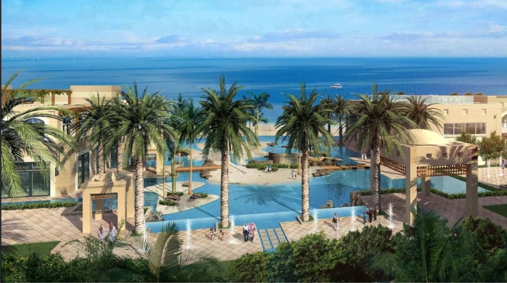

01 · People
Places designed around people.
Every plan starts with the people who will live, work, pray and visit there: human-scale streets, shade, walkability and public spaces where communities can gather.
 Kidana Al Khaif · Mina, Makkah →
Kidana Al Khaif · Mina, Makkah →Sustainability
Our responsibilities and actions across the whole ecosystem (people, society, culture, the environment and the planet), measured by performance, to build a better future for our planet.
 Heliopark · New Cairo →
Heliopark · New Cairo →Our commitment
Sustainability is at the core of everything we do.
We envision urban environments that are not only dynamic and livable, but deeply respectful of their environmental, social and cultural contexts.
Our goal is simple: to leave a positive legacy. Through every project, we aim to contribute to a more sustainable, equitable and meaningful urban future.
We are committed to:
Five responsibilities, one approach
01 · People
Every plan starts with the people who will live, work, pray and visit there: human-scale streets, shade, walkability and public spaces where communities can gather.
Kidana Al Khaif · Mina, Makkah →02 · Society
We plan for social inclusion: affordable housing, access to services and mixed-use neighbourhoods that give every generation a place to belong, and a stake in the city's future.
 Sumou Boulevard · New Cairo →
Sumou Boulevard · New Cairo →03 · Culture
We read each place's history before we draw a line, protecting cultural landscapes and carrying local identity forward, so that new development deepens a place's character rather than erasing it.
 Khaybar Heritage Area · AlUla →
Khaybar Heritage Area · AlUla →04 · Environment
Responsible land use, protected ecosystems, water-wise landscapes and green building standards, from nature reserves in AlUla to green communities in New Cairo.
 Sharaan Nature Reserve · AlUla →
Sharaan Nature Reserve · AlUla →05 · Planet
At regional scale we plan for resilience: compact growth, low-carbon mobility and coastlines and deserts managed for the long term, so that our work leaves the planet better prepared.

North-West Coast Regional Vision · Egypt →
Where sustainability shapes place, purpose and people.
Alamein Riviera · North Coast, Egypt →Designing resilient futures
From mega cities to sacred landscapes, we weave resilience into every layer of planning.
Every decision we make is designed to serve the future. That is how we build legacy, rooted in sustainability.
Goals we support
Our work is aligned with the UN Sustainable Development Goals, contributing most directly to seven of the seventeen.
Sustainability in practice
 Khaybar Heritage Area Master PlanKhaybar, AlUla · 20202011Regional Vision for the North Coast and Tourism Development Master Plan for Fuka-MatrouhFuka-Matrouh sub-region, North Coast · 20112021Sharaan Nature Reserve Master PlanAlUla · 2021-2022
Khaybar Heritage Area Master PlanKhaybar, AlUla · 20202011Regional Vision for the North Coast and Tourism Development Master Plan for Fuka-MatrouhFuka-Matrouh sub-region, North Coast · 20112021Sharaan Nature Reserve Master PlanAlUla · 2021-2022All projects Environmentally sustainable development
Sustainability is at the core of every PUD project, through four commitments: environmental responsibility, social inclusion, cultural heritage preservation and green building standards. PUD applies them across five responsibilities: people, society, culture, the environment and the planet.
PUD's work is aligned with the UN Sustainable Development Goals and contributes most directly to seven of the seventeen: SDG 7 (affordable and clean energy), 8 (decent work and economic growth), 9 (industry, innovation and infrastructure), 11 (sustainable cities and communities), 12 (responsible consumption and production), 13 (climate action) and 17 (partnerships for the goals).
Examples include the AlUla County Framework Plan, the Khaybar Heritage Area master plan and the Sharaan Nature Reserve master plan in Saudi Arabia, and the North-West Coast regional vision in Egypt.